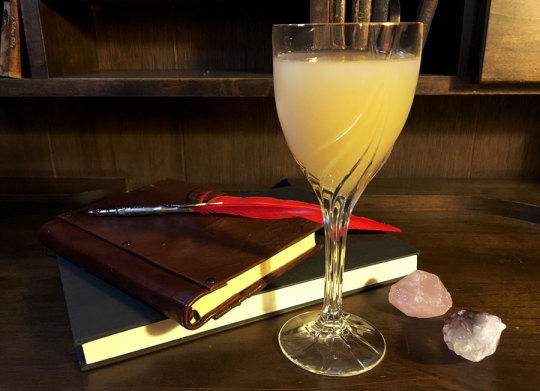

The amazing Sweet Nectar

The juice of the gods
This delicious drink is flavorful, nourishing, and surprisingly elegant when served in a tall glass.
Get your produce during peak season; the quality of the fruit will make a huge difference in the taste.
Ingredients
2 cups fresh stone fruit (peaches or nectarines are ideal), peeled and sliced
Water
I Tbsp lemon juice
⅓ cup sugar (or more to taste, depending on the tartness of the fruit).
¼ to ½ tsp rosewater (optional)
- Place the fruit in a large saucepan and add just enough water to cover.
- Bring to a boil and then simmer until the fruit is soft enough to easily crush with a spoon, about 20-25 minutes.
- Add the lemon juice and sugar to the fruit mixture and let cool to room temperature.
- Reserving the cooking liquid, strain out the fruit and place in a blender.
- Process until very smooth, then add the saved cooking liquid along with 2 more cups water and the rosewater if desired.
- Stir to combine and chill before serving.